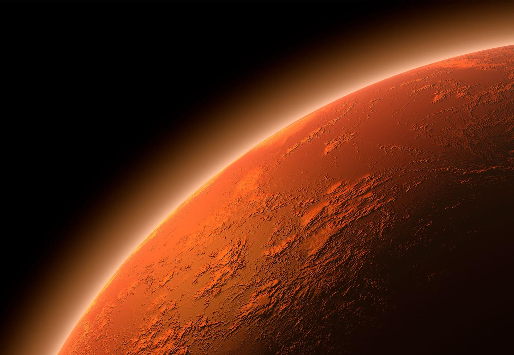
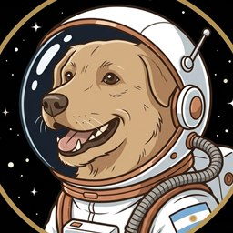

Conectá un control de Xbox 360 por USB y apretá cualquier botón: se configura solo.
| Acción | Teclado y mouse | Control Xbox 360 |
|---|---|---|
| Mover la cámara | W A S D / flechas / arrastrar | Stick izquierdo |
| Girar e inclinar la cámara | Q E / clic derecho + arrastrar | Stick derecho |
| Acercar / alejar | Rueda / Z X | RT acercar · LT alejar |
| Construir o seleccionar | Clic izquierdo | A (en la mira del centro) |
| Cancelar / volver | Esc / clic derecho | B |
| Rotar la pieza | R | X |
| Modo desarmar | 0 | Y |
| Categorías del dock | 1 a 8 · 9 radar | LB RB |
| Elegir construcción | Clic en la tarjeta | Cruceta ← → |
| Semiesfera / semicilindro | Botones de la bandeja | Cruceta ↑ ↓ |
| Pausa | Espacio | Start |
| Mostrar la misión | O | Back |
El navegador no deja que una página se cierre sola. Podés cerrar esta pestaña cuando quieras.
Un sol es un día en Marte: dura 24 horas y 37 minutos. La gravedad es 0,38 g, así que pesás casi tres veces menos que en la Tierra.
| Consumo | Semicilindro | Semiesfera |
|---|---|---|
| Calefacción | 50·π·r²·L | 200·π·r³ / 3 |
| Iluminación | L·r·7,15 | r²·π·3,6 |
| Con r = 2 m y L = 6 m | 3.770 W + 86 W | 1.676 W + 45 W |
Comunicaciones 200 W · Presurización 300 W · Cocina 3.000 W · Control 400 W · Equipo médico 100 W · Cada tripulante 700 W · Granja 2.700 W · MOXIE + electrólisis 6.000 W · Planta de agua 20.000 W.
La luz tarda entre 4 y 24 minutos en ir de la Tierra a Marte. Sin antena no pueden llegar los cohetes ni los avisos de tormenta solar.
NASA: MOXIE · Kilopower / KRUSTY · Extracción de agua · Consumo de astronautas · DONKI · Agua en Marte · DOE: Electrólisis PEM.